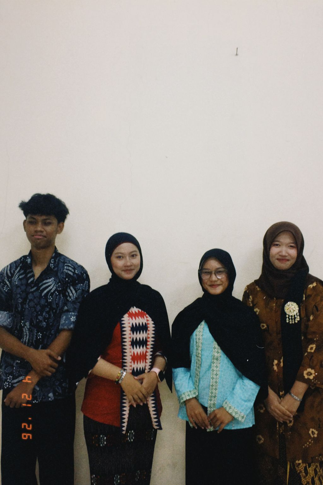
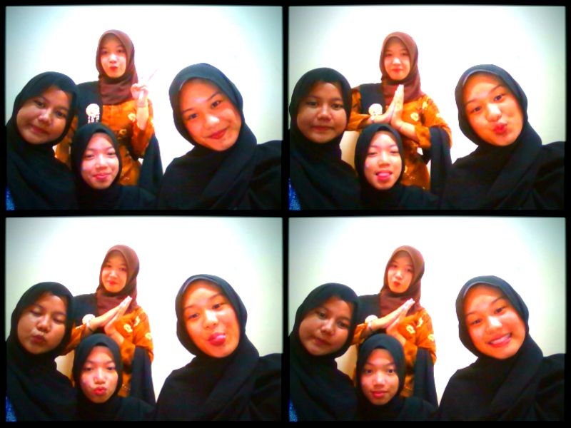

Sejarah Hari Kartini
Sejarah Kartini berkaitan erat dengan perjuangannya dalam memperjuangkan hak perempuan di Indonesia pada masa penjajahan Belanda. Ia lahir pada 21 April 1879 di Jepara, dalam lingkungan bangsawan Jawa yang masih kuat dengan adat dan tradisi.
Pada masa itu, perempuan pribumi umumnya tidak diperbolehkan mengenyam pendidikan tinggi dan harus menjalani kehidupan yang terbatas, termasuk tradisi pingitan. Kartini mengalami hal tersebut, tetapi ia tidak menyerah. Selama masa pingitan, ia memperluas pengetahuannya dengan membaca buku, majalah, dan surat kabar dari Eropa.
Kartini kemudian menjalin korespondensi dengan sahabat-sahabatnya di Belanda. Melalui surat-surat ini, ia mengungkapkan kondisi perempuan di Jawa yang tertinggal dalam pendidikan serta keinginannya untuk membawa perubahan. Ia menekankan pentingnya pendidikan bagi perempuan agar dapat meningkatkan derajat dan peran mereka dalam masyarakat.
Pemikiran Kartini menjadi awal munculnya gerakan emansipasi wanita di Indonesia. Setelah menikah dengan Bupati Rembang, ia mulai mewujudkan cita-citanya dengan mendirikan sekolah untuk perempuan di daerah Rembang. Sekolah ini menjadi langkah awal dalam membuka akses pendidikan bagi perempuan pribumi.
Meskipun Kartini wafat pada usia muda pada tahun 1904, perjuangannya tidak berhenti. Setelah meninggal, surat-suratnya dikumpulkan dan diterbitkan menjadi buku Habis Gelap Terbitlah Terang. Buku ini menyebarkan gagasan-gagasannya ke seluruh dunia dan menginspirasi banyak orang.
Sebagai penghormatan atas jasanya, pemerintah Indonesia menetapkan tanggal 21 April sebagai Hari Kartini. Sejarah Kartini kini dikenang sebagai tonggak penting dalam perjuangan kesetaraan dan pendidikan bagi perempuan Indonesia.
BIOGRAFI SINGKAT
- Kartini Lahir: 21 April 1879, di Jepara, Jawa Tengah.
- Orang Tua: Raden Mas Adipati Ario Sosroningrat (Bupati Jepara) dan M.A. Ngasirah.
- Pendidikan: Sempat bersekolah di ELS (Europeesche Lagere School) hingga usia 12 tahun, di mana ia belajar bahasa Belanda.
- Masa Pingitan: Sesuai adat, Kartini menjalani pingitan setelah usia 12 tahun, namun tetap belajar mandiri dan korespondensi dengan teman-teman Belanda, seperti Rosa Abendanon.
- Pernikahan: Menikah dengan KRM Adipati Ario Singgih Jojo Adiningrat (Bupati Rembang) pada usia 24 tahun. Wafat: 17 September 1904, pada usia 25 tahun, empat hari setelah melahirkan putra pertamanya.
Lagu Nasional Ibu Kita Kartini:
Kisah tokoh Kartini:
Lirik Lagu Ibu Kita Kartini
Ibu kita Kartini
Putri sejati
Putri Indonesia
Harum namanya
Ibu kita Kartini
Pendekar bangsa
Pendekar kaumnya
Untuk merdeka
Wahai Ibu kita Kartini
Putri yang mulia
Sungguh besar cita-citanya
Bagi Indonesia
Quotes
"Habis gelap terbitlah terang".
"Kami dapat menjadi manusia sepenuhnya, tanpa berhenti menjadi wanita seutuhnya"."
"Bagaimanapun jalannya, sekali-kali jangan lelah untuk berusaha gigih membela semua yang baik"
"Bukanlah laki-laki yang hendak kami lawan, melainkan pendapat kolot dan adat usang".
"Gadis yang pikirannya sudah dicerdaskan, pemandangannya sudah diperluas, tidak akan sanggup lagi hidup di dalam dunia nenek moyangnya".
"Banyak hal yang bisa menjatuhkanmu, tapi satu-satunya hal yang benar-benar dapat menjatuhkanmu adalah sikapmu sendiri".
Gallery Kartini





